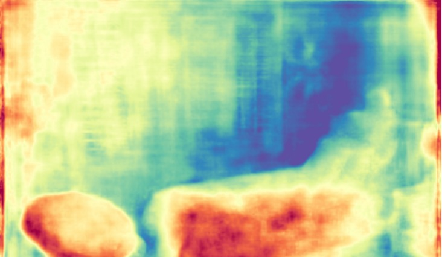

دانشگاه خواجه نصیرالدین طوسیدانشکده مهندسی کامپیوترگروه هوش مصنوعی
جلسه دفاع از پایاننامه کارشناسی ارشد
تخمین عمق بدون نظارت با استفاده از پارامترهای کالیبراسیون داخلی به عنوان ورودی
- نگارش
- محمدامین قاسمزاده
- استاد راهنما
- دکتر بهروز نصیحتکن
- داوران
- دکتر حمید ابریشمی مقدم (داور داخلی)
دکتر محمدرضا محمدی (داور خارجی)
پاییز ۱۴۰۵
اهمیت عمق مطلق در تخمین تکدوربینه


عمق نسبیکدامیک نزدیکتر است؟
عمق مطلقچند متر فاصله دارد؟
اندازهگیری فاصلهکنترل حرکت و ناوبریبازسازی سهبعدی
مدل پایه: Depth Anything V2

تصویر
انکودر DINOv2ViT-S / B / L / G
دیکودر DPT
عمق نسبی
۵۹۵ هزارتصاویر مصنوعی برای معلم
۶۲ میلیونتصاویر واقعی شبهبرچسبخورده
۲۵ میلیون تا ۱٫۳ میلیاردپارامترها، از کوچکترین تا بزرگترین
بدون ورودی هندسه دوربین
ورودی تصویر و ماتریس کالیبراسیون دوربین
مدل پیشنهادی
مدل پایه: فقط تصویر
مدل پیشنهادی: تصویر همراه K
تفکیک اطلاعات دیداری از اطلاعات هندسی
مجموعهدادهها و دوربینهای آنها
| مجموعهداده | صحنه | میدان دید افقی | تصاویر آموزش | تصاویر آزمون |
|---|---|---|---|---|
| مجموعههای آموزش | ||||
| NYUv2 | واقعی، داخلی | 63° | 636 | 654 |
| KITTI | واقعی، جادهای | 82° | 9,148 | 652 |
| Virtual KITTI 2 | مصنوعی، جادهای | 81° | 37,860 | — |
| Cityscapes | واقعی، شهری | 49° | 2,852 | 500 |
| دیدهنشده در آموزش | ||||
| SUN RGB-D · Kinect v1 | واقعی، داخلی | 57° | — | 200 |
| SUN RGB-D · Kinect v2 | واقعی، داخلی | 69° | — | 200 |
| SUN RGB-D · RealSense | واقعی، داخلی | 52° | — | 200 |
| SUN RGB-D · Xtion | واقعی، داخلی | 55° | — | 200 |
| DIODE | واقعی، بیرونی | 60° | — | 446 |
هشت مجموعه آزمون، ۳۰۵۲ تصویر


مقایسه کیفی نگاشتهای عمق
NYUv2
تصویر ورودیعمق مرجعپایه منتشرشدهکنترلپیشنهادی

بازه رنگی مشترک هر ردیف: تفاوت مقیاس یعنی تفاوت رنگ
عدد هر خانه: AbsRel همان تصویر
نقشه خطا: نسبت عمق پیشبینیشده به عمق مرجع
تصویر ورودیپایه منتشرشدهکنترلپیشنهادی
 NYUv2 / Kinect v1
NYUv2 / Kinect v1
تصویر ورودیپایه منتشرشدهکنترلپیشنهادی
 Kinect v2 / Cityscapes
Kinect v2 / Cityscapes
- قرمز: دورتر از مرجع
- سفید: انطباق
- آبی: نزدیکتر از مرجع
مدل پیشنهادی: نزدیکترین به سفید
از توجه شما سپاسگزارم
پرسش و پاسخ
محمدامین قاسمزاده